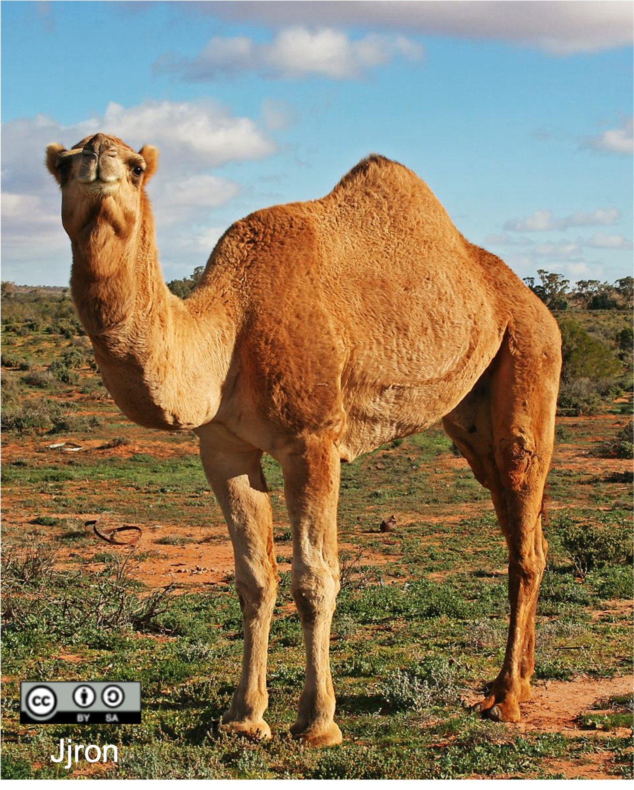

當人們想到駱駝時，總會聯想到牠們背上的「駝峰」與「沙漠」環境。許多人以為駝峰是用來儲存水的，其實這是一個常見的誤解。駱駝的駝峰主要儲存的是脂肪，而不是水。這些脂肪在能量不足時會被分解，釋放能量，同時產生代謝水，幫助駱駝在乾旱地區維持生命活動。
駱駝之所以能在沙漠中生存，靠的不只是駝峰。牠們的身體還有許多適應乾燥環境的特點。例如：牠們的尿液非常濃縮，糞便也乾燥堅硬，這樣可以減少水分的流失；牠們的鼻腔可以回收呼氣中的水氣；此外，駱駝可以在短時間內大量飲水，一次最多能喝下超過100公升，然後在數天內不喝水也能生存。
駱駝又分為單峰駱駝與雙峰駱駝兩種。單峰駱駝主要分布在中東與北非的乾熱沙漠，背上只有一個高而尖的駝峰。雙峰駱駝則生活在蒙古和中國西部等寒冷乾燥的地區，擁有兩個寬厚的駝峰。雖然駝峰看起來像水囊，但實際上它們是脂肪的儲藏庫。在缺乏食物和水的情況下，駱駝可以分解駝峰的脂肪來提供能量，並產生代謝水，協助牠們生存下去。
單峰駱駝適合在高溫沙漠中快速移動，駝峰小而集中，讓身體其他部位更容易散熱；而雙峰駱駝則體型較矮壯，毛更長，有利於在寒冷地區保暖與長途跋涉。駝峰的數量與形狀，正是牠們長期演化適應各自環境的結果。
在降水稀少、氣溫變化劇烈的沙漠生態系，白天高溫、夜晚寒冷，加上缺乏水源，駱駝靠著特殊的生理結構，正是沙漠中最著名的生存專家。
圖片來源：康軒國中生物